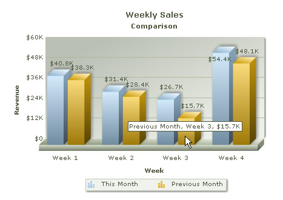

| Creating Multi-series Chart | ||||||||||||||||||
|
To plot multiple datasets we use multi-series charts. Consider the Weekly Sales chart for two consecutive months. Here, for each week, we have two sets of data coming from current month and previous month. |
||||||||||||||||||
| Let's examine the following data for a multi-series chart. | ||||||||||||||||||
|
||||||||||||||||||
 |
||||||||||||||||||
| Before you go further with this page, we recommend you to please read the previous page, Creating First Chart, as we start off from concepts explained in that page. | ||||||||||||||||||
Let's go through the following code that builds the multi-series chart shown above: |
||||||||||||||||||
<%@LANGUAGE="VBSCRIPT"%> <% ' Include FusionCharts ASP Class %> <!--#include file="../Class/FusionCharts_Gen.asp"--> <% dim FC ' Create FusionCharts ASP class object set FC = new FusionCharts ' Set chart type to Multiseries Column3D chart Call FC.setChartType("MSColumn3D") ' Set chart size Call FC.setSize("450","350") ' Set the relative path of the SWF file call FC.setSWFPath("../FusionCharts/") dim strParam ' Define chart attributes strParam="caption=Weekly Sales;subcaption=Comparison;xAxisName=Week;yAxisName=Revenue;numberPrefix=$" ' Set chart attributes call FC.setChartParams(strParam) ' Add category names call FC.addCategory("Week 1", "", "") call FC.addCategory("Week 2", "", "") call FC.addCategory("Week 3", "", "") call FC.addCategory("Week 4", "", "") ' Create a new dataset call FC.addDataset("This Month", "") ' Add chart values for the above dataset call FC.addChartData("40800", "", "") call FC.addChartData("31400", "", "") call FC.addChartData("26700", "", "") call FC.addChartData("54400", "", "") ' Create second dataset call FC.addDataset("Previous Month", "") ' Add chart values for the second dataset call FC.addChartData("38300", "", "") call FC.addChartData("28400", "", "") call FC.addChartData("15700", "", "") call FC.addChartData("48100", "", "") %> <html> <head> <title>Multi-series Chart : Using FusionCharts ASP Class</title> <script language='javascript' src='../FusionCharts/FusionCharts.js'></script> </head> <body> <% 'Render Chart with JS embedding Method call FC.renderChart(false) %> </body> </html> |
||||||||||||||||||
As you can see in the above code, we are doing the following:
|
||||||||||||||||||
| Please go through FusionCharts ASP Class API Reference section to know more about the functions used in the above code. | ||||||||||||||||||
And the multi-series chart is ready! |